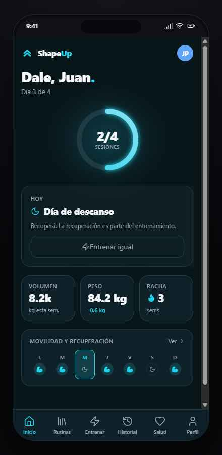
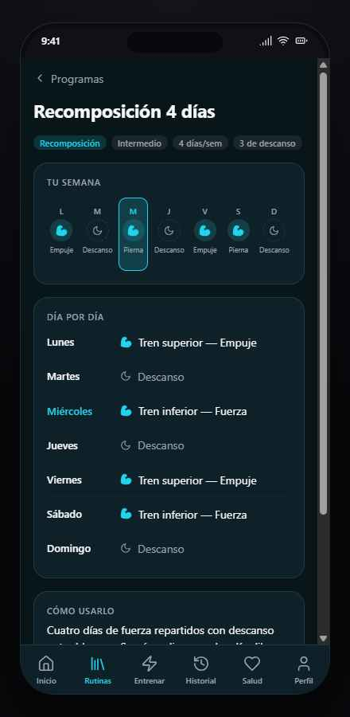
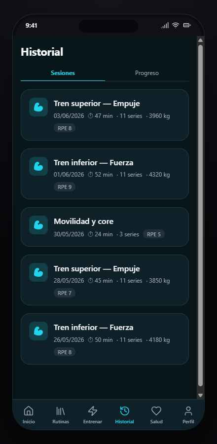
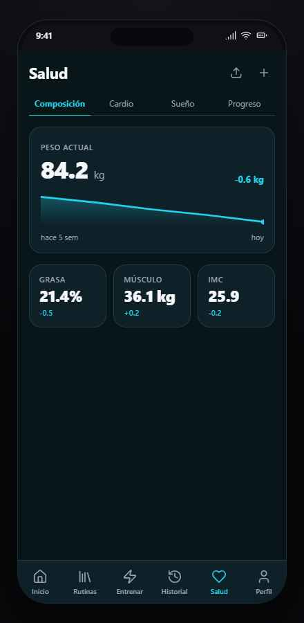
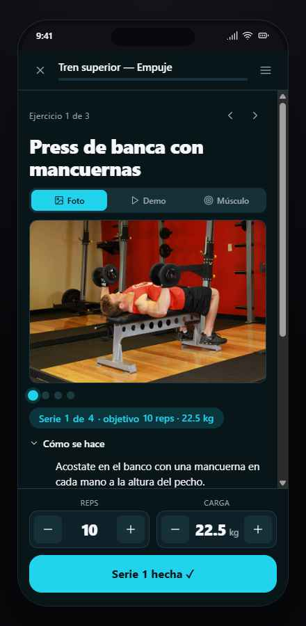

9 jun 2026 · auditoría rápida (top 10) · criterio: impacto en el usuario · contrastada con jpcofano/shapeup@main
Medido: de las 115 traducciones en traducciones-fedb.es.json, 107 conservan menos del 60% del contenido EN. Las peores quedan en 14–18% — Concentration Curls: 1.138 caracteres y 5 pasos en EN → 160 caracteres y 3 pasos en ES. Promedio ES: 3,1 pasos.
Se pierden los tips de técnica ("meñique más alto que el pulgar"), la respiración y las advertencias ("evitá balancearte"). Quien entrena con la ficha en español recibe un resumen, no instrucciones. Es exactamente lo que notaste: la forma en inglés es más completa.
puntosClave; los "Caution:" a erroresComunes; se mantienen las señales de respiración. Validador en importar-fedb.ts que marque warning si ratio ES/EN < 0,7.Medido: el importador deja los pendientes con nombre e instrucciones en inglés y puntosClave: [], erroresComunes: []. Pendientes: 443 beginner · 264 intermediate · 51 expert; 497 strength · 100 stretching · 56 plyometrics.
En producción el catálogo mezcla "Sentadilla goblet" con "Barbell Glute Bridge", y las fichas pendientes no tienen puntos clave ni errores comunes. Experiencia despareja para la familia.
--solo-traducidos hasta ampliar cobertura (catálogo chico pero 100% ES), o (b) importar todo con badge "EN" visible + filtro "solo en español", y traducir por lotes priorizando los 443 beginner.patronAprox() etiqueta mal los patrones de movimientoEn importar-fedb.ts: todo push → "Empuje horizontal" (un press militar es vertical), todo pull → "Tracción horizontal" (un chin-up es vertical), y el default es "Aislamiento" — que es mecánica, no patrón (una sentadilla sin force quedaría "Aislamiento").
Los filtros por patrón y el mapa muscular (B3) heredan datos incorrectos.
Un peso muerto y un estiramiento reciben el mismo descanso sugerido.
"Día 3 de 4" bajo el saludo, y al lado el anillo dice "2/4 SESIONES": dos formas distintas de contar la misma semana. ¿Día del programa? ¿Sesiones hechas?
En sesiones cortas el chip RPE queda inline con la meta; en las demás baja a una segunda línea. Fecha, series y kg pelean al mismo peso visual.
Tras los 3 KPIs queda casi media pantalla en blanco; el gráfico de peso es una recta sin puntos ni labels intermedios.
El dock inferior (steppers + CTA) tapa el final de "Cómo se hace"; nada indica que hay más contenido debajo.
Cambios de pantalla y de tab sin transición; el anillo de progreso no anima al entrar; "Serie 1 hecha ✓" no da feedback.
prefers-reduced-motion.El repo tiene EjercicioForm.tsx y creación; el kit muestra el FAB sin acción.





--solo-traducidos.A1 + A2 (un solo prompt de datos) → A3 (mismo PR del importador) → C9 (micro-interacciones, kit primero) → B5–B8 (pulido en un solo pase) → A4 y C10 (menores). Copia en repo: explorations/AUDITORIA-kit-datos-jun2026.md.